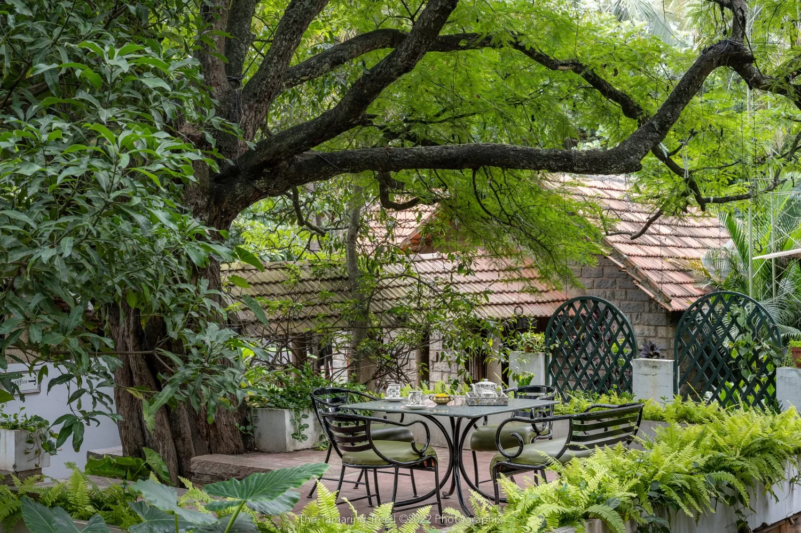

photo shooting
Munnar: Famous for rolling tea estates, mist-covered mountains, and scenic viewpoints. Alleppey (Alappuzha): Renowned for traditional houseboats, serene backwaters, and lush coconut lagoons. Varkala: Features dramatic cliffs adjacent to the ocean, providing a unique backdrop, particularly at Kappil Beach. Kovalam: Known for its iconic lighthouse and popular beaches. Kumarakom: Offers a quieter backwater experience with scenic bird sanctuaries and traditional, rustic scenes. Other Locations: Kochi for heritage/urban settings and Calicut/Kozhikode for vibrant beaches. Best Time: Early morning or late afternoon (golden hour) ensures the best lighting. Weather: October to March is ideal; however, rainy shoots (drizzle) can offer a dramatic feel. Planning: Hiring local specialized photographers familiar with scenic spots is recommended.

The history of the photoshoot began with Nicéphore Niépce’s first permanent photograph in 1826, requiring hours of exposure, and evolved from early daguerreotypes (1839) to mass-market Kodak roll film (1888). The 20th century introduced 35mm film, photojournalism, color photography, and eventually digital technology, shifting photography from a niche, laborious art form into an instantaneous, global, and everyday activity. Britannica Britannica +5 Key Milestones in Photography History 1826/27 - The First Photograph: Nicéphore Niépce captured a view from his window in France, which required an eight-hour exposure, creating the first permanent image. 1839 - Birth of Modern Photography: Louis Daguerre introduced the Daguerreotype process, producing detailed images on copper plates. Simultaneously, William Henry Fox Talbot introduced the negative-positive calotype process, allowing for image reproduction. Late 19th Century - Accessibility: In 1888, George Eastman introduced the Kodak camera, marketing it with "You press the button, we do the rest," which brought photography to the general public. Early 20th Century - Art & Journalism: Photographers like Alfred Stieglitz promoted photography as art, while techniques like candid portraits developed in the 1930s (e.g., Henri Cartier-Bresson’s "decisive moment"). 1935 - Color Photography: Kodak introduced Kodachrome, the first widely successful color film. Digital Age (1990s-Present): The shift from film to digital sensors, followed by the advent of smartphones, transformed photography into an instant medium |
 |
Evolution of Techniques Daguerreotype (1839): A unique, highly detailed photograph on a silver-plated copper sheet. Wet Plate Collodion (1851): Replaced daguerreotypes by allowing negatives to be produced on glass, enabling multiple prints, though it required immediate processing. Dry Plates (1870s): Increased photosensitivity and allowed plates to be prepared ahead of time. 35mm Film (1920s-30s): Smaller cameras made photography faster and more portable. Pixsy Pixsy +4 Early Photography Themes Portraits: Due to long exposure times, early portrait subjects had to remain perfectly still, often using props to hold their heads steady. Documentary: By the 1850s-60s, photographers began documenting events such as the American Civil War. Pictorialism (Late 19th Century): Focused on aesthetic beauty rather than strictly documenting reality, often manipulating prints to look like paintings. The first photograph And in 1826/7, Nièpce succeeded in making the earliest surviving camera photograph. It represented a view from a window at Le Gras (his hometown in Burgundy, France), captured on a pewter plate coated in bitumen diluted in lavender oil. The exposure time was probably several days. French inventor Joseph Nicéphore Niépce took the first permanent photograph, known as View from the Window at Le Gras, in 1826 or 1827. Using a process called heliography ("sun writing"), he exposed a bitumen-coated pewter plate inside a camera obscura for at least eight hours to capture the view from his Burgundy
back to home